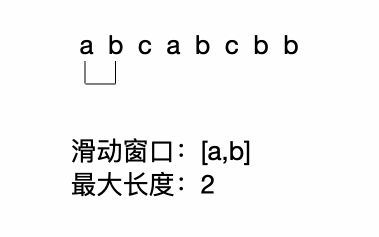

Leetcode 3: 无重复字符的最长子串¶
题目描述¶
给定一个字符串，请你找出其中不含有重复字符的 最长子串 的长度。
示例 1:
输入: "abcabcbb"
输出: 3
解释: 因为无重复字符的最长子串是 "abc"，所以其长度为 3。
示例 2:
输入: "bbbbb"
输出: 1
解释: 因为无重复字符的最长子串是 "b"，所以其长度为 1。
示例 3:
输入: "pwwkew"
输出: 3
解释: 因为无重复字符的最长子串是 "wke"，所以其长度为 3。
请注意，你的答案必须是 子串 的长度，"pwke" 是一个子序列，不是子串
思路¶
借助滑动窗口的思想。逐步遍历字符串，当遍历到的字符串出现在窗口中时，移除窗口的最左侧字符。
代码¶
1 2 3 4 5 6 7 8 9 10 11 12 13 14 15 16 17 18 19 20 21 22 23 | // Java代码
public int lengthOfLongestSubstring(String s) {
int len = s.length();
if (len <= 1) {
return len;
}
Set<Character> set = new HashSet<>();
int maxLen = 0;
int l = 0, r = 0;
while (r < len) {
char ch = s.charAt(r);
boolean exist = set.contains(ch);
if (exist) {
// 说明存在字符ch，则
set.remove(s.charAt(l++));
} else {
set.add(ch);
r++;
}
maxLen = Math.max(set.size(), maxLen);
}
return maxLen;
}
|
1 2 3 4 5 6 7 8 9 10 11 12 13 14 | def lengthOfLongestSubstring2(self, s):
if not s:
return 0
window = []
r = max_len = 0
while r < len(s):
cur = s[r]
if cur in window:
window.pop(0)
else:
window.append(cur)
r += 1
max_len = max(max_len, len(window))
return max_len
|
来源：力扣（LeetCode）
链接：https://leetcode-cn.com/problems/longest-substring-without-repeating-characters
著作权归领扣网络所有。商业转载请联系官方授权，非商业转载请注明出处。